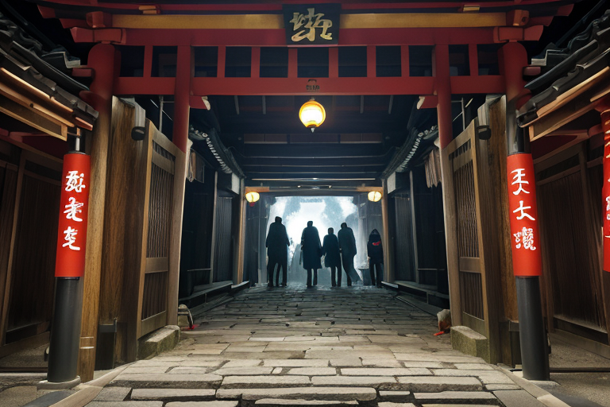
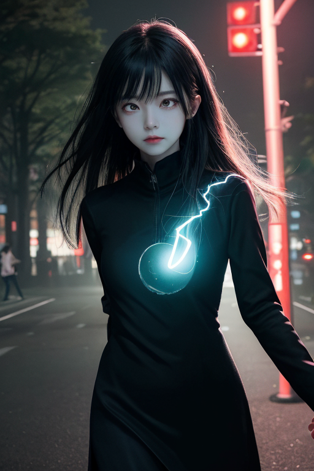
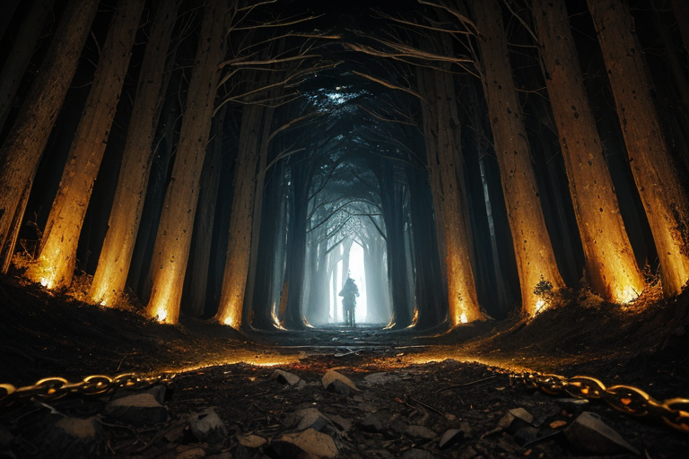
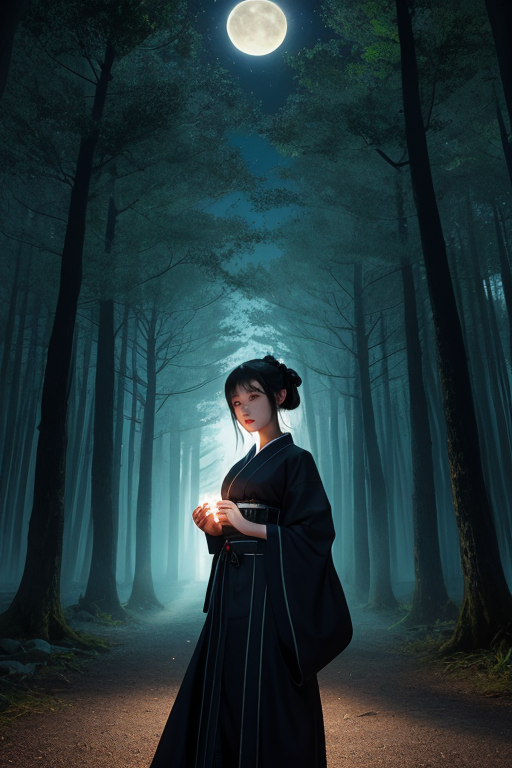
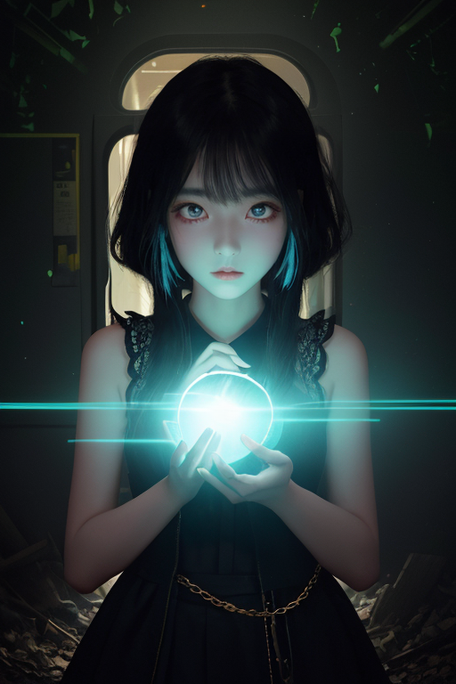

第一章 現実の東京
あなたはまだ気づいていない。この土地にも、王がいることを。
浅草寺の雷門をくぐる人の流れは、絶え間なく、一定の速度で境内へと吸い込まれていく。観光客の笑い声、仲見世の店員の呼び込み、線香の煙。すべてが予定調和のリズムで繰り返される。しかし、その奥、本堂の陰にひっそりと佇む五重塔の礎石には、黒と金と赤で描かれた、微かに回転しているような三重円の紋が刻まれている。誰の目にも、ただの古びた模様にしか映らない。
ここは、歪みの列島のほぼ中心。欲望と加速が渦巻く都市、東京の地下深くには、かつて関東大震災の激震、東京大空襲の業火によって生じた巨大な「歪み」が眠る。それは封印されている。加速王トキオニア・アークスと、彼を支える妖精たちの力によって、静かに、しかし確実に増殖する都市の時間的圧力から守られるためだ。
満員電車が轟音と共にトンネルを駆け抜ける。その振動は、地下の封印を微かに揺らす。王はそこで、目を開けないまま、都市の鼓動を聴いている。速さはこの街を進化させたのか、それとも、ゆっくりと消耗させているのか。答えは、まだ封印の中にある。

第二章「歪みの兆候」
明治神宮の森は、都心の喧騒を吸い込むように静まり返っていた。その深部、鬱蒼とした木々の根元で、加速王トキオニア・アークスは漆黒の紋章に手を置き、目を閉じていた。彼の掌の下、三重円の紋章は微かに脈打ち、金と赤の光が不規則に走る。都市の「速さ」が生み出す時間的歪みを、ここで吸収し、封じ続けるのが彼の役目だ。
しかし、最近の脈動は荒い。妖精クロノアークが報告する。渋谷スクランブル交差点の人流データに、0.3秒の不可解な「遅延」が三度記録された。秋葉原の電気街を流れる無数の電流に、意図せぬ「加速」の波が混入している。これらは、巨大な歪みの前触れ、封印そのものの劣化を示す微かな痙攣だった。
「焦り」という感情が、王の内側をかすめた。かつて関東大震災、東京大空襲という巨大な歪みを、先代の王たちがどれほどの力で封じ込めたか。効率と加速を追求するこの街が、自らの基盤を蝕む力を生み出している。彼は目を開けず、より深く森の静寂に耳を澄ませた。封じられた「何か」が、ゆっくりと目覚めようとする、不穏な胎動を感じながら。

第三章 王の葛藤
明治神宮の森は、外の喧騒を遮断する生きた封印だった。トキオニア・アークスは、その中心で目を閉じ、地中に張り巡らされた「歪みの鎖」に意識を集中させる。浅草寺の下、渋谷の交差点の真下、東京タワーの礎の奥深く。無数の鎖が、巨大な歪みを縛り続けている。関東大震災の断層の呻き。大空襲の熱の残滓。それらは先代たちが必死に封じ込めた災厄の記憶そのものだ。
「このままでは、鎖が耐えられません」
クロノアークの声が冷たく響く。加速しすぎた時間が、封印そのものを侵食している。
解放すれば、歪みは一気に噴出する。だが、その衝撃を「分散」させ、新たな均衡へと導く可能性も、わずかながらある。維持すれば、ゆっくりと確実に、街そのものが歪みに飲み込まれていく。
効率と安全。彼は常に前者を選んできた。加速こそが進化だと思ってきた。しかし今、掌の中で軋み続ける鎖の感触は、問いかける。この速さは、果たして進化なのか、それとも、ゆっくりとした自滅への消耗なのか。彼は、初めて「判断」に躊躇った。感情という名の重みが、その背中にのしかかる。

第四章 妖精との対話
浅草寺の境内、深夜。人影の消えた空間に、アークレアの微かな放電音が響く。彼女は、手にした古びた羅針盤のような装置を見つめていた。
「この『時間封』は、関東大震災の直後に施されました」
妖精の声は、いつものせっかちさを欠き、静かだった。
「あの日、街は一瞬で壊れ、多くの時間が失われた。王は、復興という名の『加速』を選びました。瓦礫を撤去し、鉄道を敷き、街を再建する速度は、確かに驚異的でした。しかし、失われた命の時間、焼かれた記憶の時間は、あまりにも重く、王の核に亀裂を生じさせた。感情の奔流が、制御不能な加速を引き起こしかけたのです」
アークレアは、明治神宮の深い森を一瞥した。
「そこで、星の議会は『封印』を決めました。王の時間認識の一部を鎖で縛り、過剰な加速を物理的に抑制する。それは安全装置であり、同時に…罰でもあった。王が『効率』だけを追い求め、街の『持続』を見失ったことへの」
彼女はため息をつく。
「速さは進化か消耗か。その答えは、王がこの鎖を『外すべきか』『維持すべきか』を決める時、初めて現れます。私たち妖精は、ただその選択が、浅草の風鈴の音も、渋谷の雑踏も、すべてを含んだ上でなされることを願っているだけです」

第五章 微調整と余韻
明治神宮の森は、深い闇に沈んでいた。トキオニア・アークスは、封印の鎖が微かに軋むのを感じながら、森の中心に立っていた。彼の手には、歪みを補正するための微かな光が揺れている。浅草寺の風鈴、渋谷の交差点、秋葉原のネオン…この街のすべての「速さ」が生み出す歪みを、今、静かに整えていく。それは決して華々しいものではなく、むしろ地味で、ほとんど気付かれない作業だった。
彼は、鎖が外れる瞬間を、ほんの一瞬だけ想像した。解放された加速力が、この街を、いや世界を、かつてない速度で変えていく光景を。しかし、その先に待つのは、関東大震災の瓦礫や、空襲の炎のように、全てを消耗し尽くす「速さ」ではないか。妖精たちの懸念が、彼の内側に沁みついていた。
「進化か、消耗か」
彼は問いを口にせず、ただ微調整を続けた。加速を完全に止めることはできない。この街の鼓動そのものが、速さを欲しているからだ。彼にできるのは、ほんの少し、ほんの一瞬、その奔流を緩め、方向を微修正することだけ。ネオンの煌めきの下でもんじゃを焼く人々の時間を、満員電車の息詰まる一瞬を、ほんの少しだけ軽くすること。
鎖は外れなかった。代わりに、彼はその重みと共に、この街の「持続」という速さを、学び始めていた。夜明け前の静寂の中、王の仕事は、まだ終わらない。
あなたの町にも、王がいる。